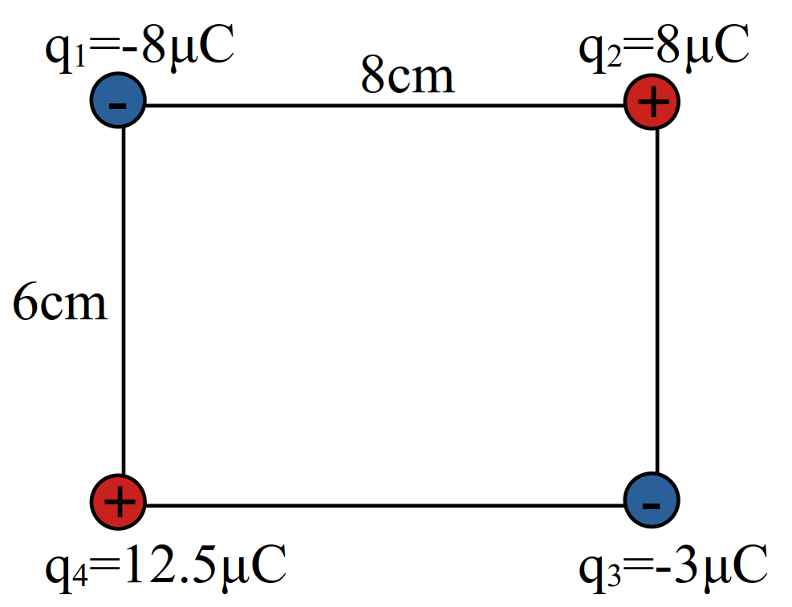
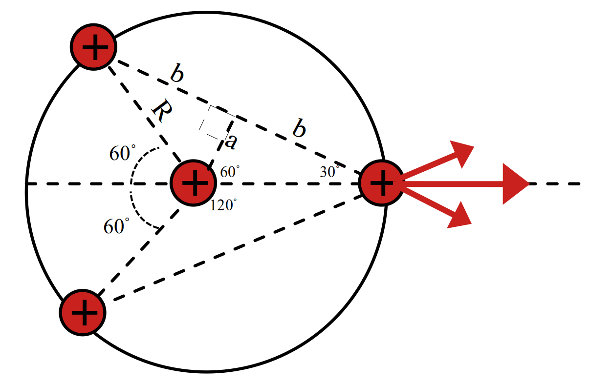
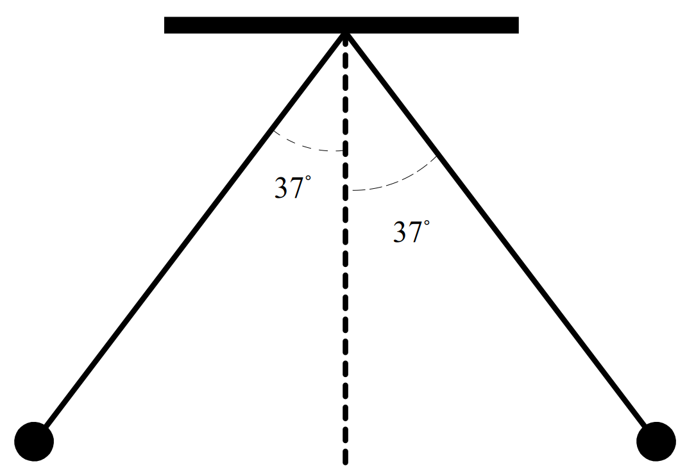
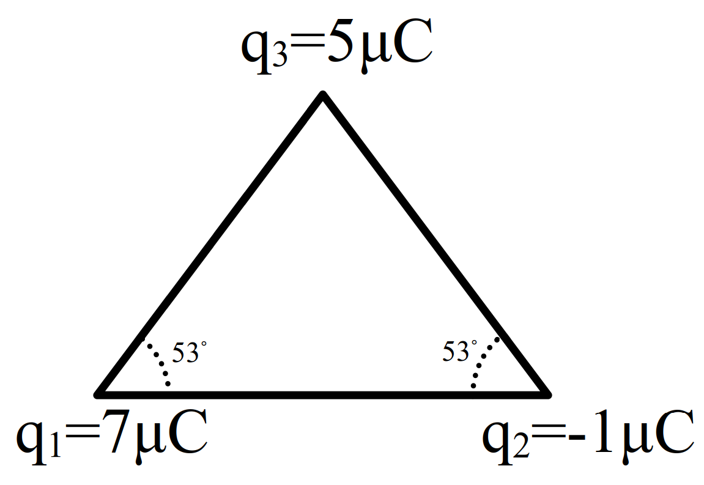
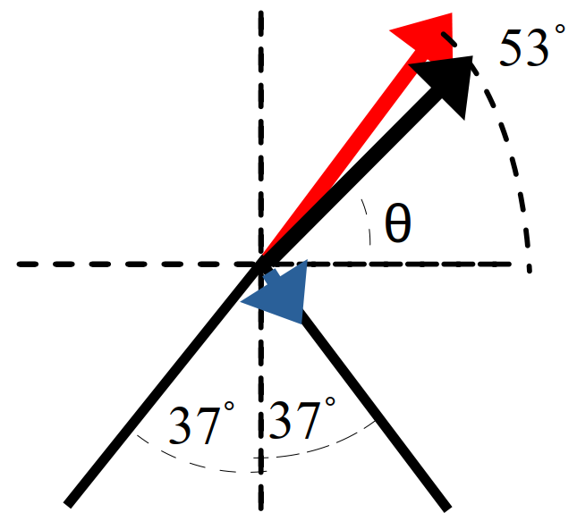

قانون کولن
قانون 1 کولن
اندازه نیروی الکتریکی (الکتروستاتیکی) بین دو بار نقطهای که در راستای خط واصل آنها اثر میکند، با حاصل ضرب بزرگی آنها متناسب است و با مربع فاصله بین آنها نسبت وارون دارد.
\[ \overset{\vec{F}_{21}}{\longleftarrow} \overset{\pm q_1}{{\LARGE\bullet}} \overset{r}{\overbrace{--------}} \overset{\pm q_2}{{\LARGE\bullet}} \overset{\vec{F}_{12}}{\longrightarrow} \\ \overset{\pm q_1}{{\LARGE\bullet}} \overset{\vec{F}_{12}}{\longrightarrow} ---- \overset{\vec{F}_{21}}{\longleftarrow} \overset{\mp q_2}{{\LARGE\circ}} \]
- نیروی الکتریکی بین دو بار الکتریکی همنام، دافعه است.
- نیروی الکتریکی بین دو بار الکتریکی ناهمنام، جاذبه است.
\[ \large \begin{aligned} F & = k \cfrac{|q_{1}||q_{2}|}{r^{2}} \\ & = \frac{1}{4\pi\varepsilon_{0}} \cfrac{|q_{1}||q_{2}|}{r^{2}} \end{aligned} \]
- \(q_{1}\) و \(q_{2}\) بارهای الکتریکی دو بار نقطه ای برحسب کولن \((C)\)
- \(r\) فاصله بین دو بار برحسب متر \((m)\)
- \(F\) بزرگی نیروی الکتریکی وارد بر هر بار برحسب نیوتون \((N)\)
- \(k\) ثابت الکتروستاتیکی یا کولن نام دارد و برابر است با
\[ k \approx 9 \times 10^{9} \frac{Nm^{2}}{C^{2}} \]
- \(\varepsilon_{0}\) نام ضریب گذردهی الکتریکی خلا
\[ \varepsilon_{0} = 8.85 \times 10^{-12} \frac{C^{2}}{Nm^{2}} \]
روش 3 رابطه مقایسهای قانون کولن ( \(F\) نیروی اولیه \(F'\) نیروی ثانویه )
\[ \cfrac{F'}{F} = \cfrac{|q'_1|}{|q_1|} \cfrac{|q'_2|}{|q_2|} \times (\cfrac{r}{r'})^{2} \]
آزمایشگاه مجازی قانون کولن
مثال 5 در مدل بور برای اتم هیدروژن، فاصله الکترون از پروتون هسته در حالت پایه \(5.3\times10^{-11}\) است (شکل را ببینید). (مثال کتاب تجربی-ریاضی)
\[ \overset{q_p = +e}{{\Huge\bullet}} \underset{r\simeq 5.3 \times 10^{-11} m}{\underbrace{ \overset{\vec{F}_{ep}}{\longrightarrow} ---- \overset{\vec{F}_{pe}}{\longleftarrow}}} \overset{q_e = - e}{{\LARGE.}} \]
الف) اندازهٔ نیروی الکتریکی که پروتون به الکترون وارد می کند را محاسبه کنید.
ب) در هسته اتم هلیم دو پروتون به فاصله تقریبی \(r \simeq 2.4 \times 10^{-15} m\) نیروی که پروتونها بر هم وارد میکنند را محاسبه کنید.
نمایش پاسخ الف
\[ \require{cancel} \begin{aligned} F & = k \cfrac{|q_{e}||q_{p}|}{r^{2}} \\ & \overset{\underrightarrow{q_{e} = q_{p}}}{=} k \cfrac{q_{e}^2}{r^{2}}\\ & = 9 \times 10^{9} \frac{Nm^{2}}{C^{2}} \times \cfrac{(1.6\times 10^{-19}C)^2}{(5.3\times 10^{-11}m)^{2}} \\ & = 9 \times 10^{9} \frac{N\cancel{{m}^{2}}}{\cancel{C^{2}}} \times \frac{\cancel{C^{2}}}{\cancel{m^{2}}} \times \cfrac{ (\cancelto{\simeq \cancelto{0.3}{1.5}}{1.6})^2 \times 10^{-38} }{ (\cancelto{\simeq \cancelto{1}{5}}{5.3})^2 \times 10^{-22} } \\ & \simeq 9 \times 10^{9} \times 10^{-38} \times 10^{+22} \times \cancelto{9\times10^{-2}}{(\frac{3}{10})^{2}} N \\ & = 9 \times 9 \times 10^{-2} \times 10^{-7} N \\ & = 81 \times 10^{-9} N = 81 nN\\ & = \boxed{8.1 \times 10^{-8} N} \end{aligned} \]نمایش پاسخ ب
\[ \underset{r\simeq 2.4 \times 10^{-15} m}{ \overset{\vec{F}_{pp}}{\longleftarrow} \underbrace{ \underset{\Huge\circ}{ \overset{\Huge\circ}{ {\LARGE\bullet} {\LARGE\bullet} }}} \overset{\vec{F}_{pp}}{\longrightarrow} } \]
\[ \begin{aligned} F & = k \cfrac{|q_{p}||q_{p}|}{r^{2}} \\ & = k \cfrac{q_{p}^2}{r^{2}} \\ & = 9 \times 10^{9} \frac{Nm^{2}}{C^{2}} \times \cfrac{(1.6 \times 10^{-19} C)^2}{(2.4 \times 10^{-15} m)^{2}} \\ & = 9 \times 10^{9} \frac{N\cancel{{m}^{2}}}{\cancel{C^{2}}} \times \frac{\cancel{C^{2}}}{\cancel{m^{2}}} \times (\cfrac{\cancelto{2}{1.6}}{\cancelto{3}{2.4}})^2 \times \cfrac{10^{-38}}{10^{-30}} \\ & = \cancel9 \times \frac{4}{\cancel{9}} \times 10^{9-38+30} N \\ & = \boxed{40 N} \end{aligned} \]نکته. نیروی هستهای نیرویی است که مانع از فروپاشی هسته به خاطر دافعه پروتونها از هم میشود.
روش 4 قانون 90
اگر بارها بر حسب \(\mu C\) و فاصله بر حسب \(cm\) بودند میتوانید از رابطه زیر استفاده کنید.
\[ \begin{aligned} F & = k \frac{|q_1||q_2|}{r^2} \\ & = 9 \times 10^{9} \frac{|q_1| \times 10^{-6} |q_2| \times10^{-6}}{r^2\times10^{-4}} \\ & = \boxed{90 \frac{|q_1||q_2|}{r^2}} \end{aligned} \]
مثال 6 فرض کنید دوبار مشابه \(Q\) در فاصله معینی نیروی \(F\) را به هم وارد میکنند. چند درصد از با یکی برداشته به دیگری اضافه کنیم تا در همان فاصله نیروی بین دوبار \(\frac{15}{16}F\) شود؟
- \(15\)
- \(16\)
- \(20\)
- \(25\)
نمایش پاسخ
\[ \require{cancel} \begin{aligned} \cfrac{F'}{F} & = \cfrac{q'_1}{q_1} \times \cfrac{q'_2}{q_2} \times (\cfrac{r}{r'})^2 \\ \cfrac{15}{16} & \overset{\underrightarrow{Q=1, r'=r}}{=} \cfrac{Q-x}{Q} \times \cfrac{Q+x}{Q} \\ \Rightarrow 15Q^2 & = 16Q^2 - 16x^2 \\ \Rightarrow 16x^2 & = Q^2 \\ \Rightarrow 4x & = Q \\ \Rightarrow x & = \cfrac{1}{4} Q = 25\%Q\\ \end{aligned} \]مثال 7 دو کره فلزی مشابه دارای بارهای الکتریکی \(q_1 = 5 \mu C\) و \(q_2 = 15 \mu C\) در فاصله \(r\) نیروی \(F\) را به یک دیگر وارد میکنند. اگر دو کره را به هم تماس داده و مجدد اگر همان فاصله قبلی قرار دهیم نیروی بین دو کره چند درصد تغییری میکند؟
- \(125\%\) افزایش
- \(25\%\) کاهش
- تقریبا \(33\%\) افزایش
- تقریبا \(33\%\) کاهش
نمایش پاسخ
\[ \require{cancel} \begin{aligned} \cancelto{\scriptsize +15}{q_1} & {\LARGE\bullet} \overset{\cancelto{1}{r}}{\leftarrow---\rightarrow}{\LARGE\bullet} \cancelto{\scriptsize +5}{q_2} & (1) \\ & \overset{q =\frac{15 + 5}{2}=10}{{\LARGE{\LARGE\bullet}}{\LARGE\bullet}} \\ \cancelto{\scriptsize +10}{q'_1} & {\LARGE\bullet} \overset{\cancelto{1}{r'=r}}{\leftarrow---\rightarrow}{\LARGE\bullet} \cancelto{\scriptsize +10}{q'_2} & (2) \end{aligned} \]
\[ \require{cancel} \begin{aligned} \cfrac{F'}{F} & \overset{(r=r')}{=} \cfrac{q_1'}{q_1} \times \cfrac{q_2'}{q_2}\\ & = \cfrac{\cancelto{2}{10}}{\cancel{5}} \times \cfrac{\cancelto{2}{10}}{\cancelto{3}{15}} \\ \Rightarrow F' & = \cfrac{4}{3} F \\ \Rightarrow \cfrac{\Delta F}{F} \% & = \cfrac{F' - F}{F} \times 100 \\ & = \cfrac{ \cancelto{ \cancelto{\frac{1}{3} \simeq 0.33}{(\frac{4}{3}-1)} \cancel{F} }{\frac{4}{3} F - F} }{\cancel{F}} \times 100 \\ & \simeq \boxed{+33\%} \end{aligned} \]مثال 8 دو بار هم اندازه و همنام در فاصله مشخصی از یکدیگر قرار دارند. اگر ده درصد یکی از بارها را کم کرده و به بار دیگری اضافه کنیم. اندازه نیرو متقابل بارها چگونه تغییر میکند؟
- \(1\%\) افزایش
- \(1\%\) کاهش
- \(19\%\) افزایش
- \(19\%\) کاهش
نمایش پاسخ
\[ \require{cancel} \begin{aligned} \cancelto{\scriptsize +1}{q_1} & {\LARGE\bullet} \overset{r}{\longleftarrow-----\longrightarrow}{\LARGE\bullet} \cancelto{\scriptsize +1}{q_2} \\ \cancelto{\scriptsize +1 - (+0.1) = 0.9}{q'_1} & {\LARGE\bullet} \overset{r'=r}{\longleftarrow-----\longrightarrow}{\LARGE\bullet} \cancelto{\scriptsize +1 + (+0.1) = 1.1}{q'_2} \end{aligned} \]
\[ \require{cancel} \begin{aligned} \cfrac{F'}{F} & \overset{(r=r')}{=} \cfrac{q_1'}{q_1} \times \cfrac{q_2'}{q_2}\\ & = \cfrac{0.9}{1} \times \cfrac{1.1}{1} \\ \Rightarrow F' & = 0.99 F \\ \Rightarrow \cfrac{\Delta F}{F} \%& = \cfrac{F' - F}{F} \times 100\\ & = \cfrac{ \cancelto{\cancelto{-0.01}{(0.99-1)}\cancel{F}}{0.99F - F} }{\cancel{F}} \times 100 \\ & = \boxed{- 1\%} \end{aligned} \]مثال 9 دو بار هم اندازه و ناهمنام در فاصله مشخصی از یکدیگر قرار دارند. اگر ده درصد یکی از بارها را کم کرده و به بار دیگری اضافه کنیم. اندازه نیرو متقابل بارها چگونه تغییر میکند؟
- \(1\%\) افزایش
- \(1\%\) کاهش
- \(19\%\) افزایش
- \(19\%\) کاهش
نمایش پاسخ
\[ \require{cancel} \begin{aligned} \cancelto{\scriptsize +1}{q_1} &{\LARGE\bullet} \overset{r}{\longleftarrow-----\longrightarrow}{\LARGE\circ} \cancelto{\scriptsize -1}{q_2} \\ \cancelto{\scriptsize +1 - (+0.1) = +0.9}{q'_1} &{\LARGE\bullet} \overset{r'=r}{\longleftarrow-----\longrightarrow}{\LARGE\circ} \cancelto{\scriptsize -1 + (+0.1) = -0.9}{q'_2} \end{aligned} \]
\[ \require{cancel} \begin{aligned} \cfrac{F'}{F} & \overset{(r=r')}{=} \cfrac{q_1'}{q_1} \times \cfrac{q_2'}{q_2} \\ & = \cfrac{0.9}{1} \times \cfrac{0.9}{1} \\ \Rightarrow F' & = 0.81 F \\ \Rightarrow \cfrac{\Delta F}{F} \%& = \cfrac{F' - F}{F} \times 100 \\ & = \cfrac{ \cancelto{\cancelto{-0.19}{(0.81-1)}\cancel{F}}{0.81F - F} }{\cancel{F}} \times 100 \\ & = \boxed{-19\%} \end{aligned} \]مثال 10 دو بار همنام \(q_1 = 12 \mu C\) و \(q_2\) در فاصله \(r\) به یکدیگر نیروی \(F\) وارد میکنند. اگر \(25\%\) از بار \(q_1\) را برداشته و به بار \(q_2\) اضافه کنیم و همچنین فاصله بین دو بار را نصف کنیم نیروی بین کولنی بین آنها پنج برابر میشود بار \(q_2\) چند میکرو کولن است؟
- \(3\)
- \(4.5\)
- \(9\)
- \(12.5\)
نمایش پاسخ
\[ \require{cancel} \begin{aligned} \cancelto{\scriptsize 12}{q_1} & {\LARGE\bullet} \overset{\cancelto{1}{r}}{\longleftarrow----\longrightarrow}{\LARGE\bullet} \cancelto{\scriptsize q}{q_2} \\ \cancelto{\scriptsize q_1 - 25\%q_1 = 12 - \frac{1}{4} \times 12 = 9}{q'_1} & {\LARGE\bullet} \overset{\cancelto{\frac{1}{2}}{r'=\frac{r}{2}}}{\leftarrow-\rightarrow} {\LARGE\bullet} \cancelto{\scriptsize q_2 + 25\%q_1 = q + \frac{1}{4} \times 12 = q + 3}{q'_2} \end{aligned} \]
\[ \require{cancel} \begin{aligned} \cfrac{F'}{F} & = \cfrac{q'_1}{q_1} \times \cfrac{q'_2}{q_2} \times (\cfrac{r}{r'})^2 \\ 5 & = \cancelto{\frac{3}{\bcancel{4}}}{\cfrac{9}{12}} \times \cfrac{q+3}{q} \times \cancelto{\bcancel{4}}{(\cfrac{1}{\frac{1}{2}})^2} \\ \Rightarrow 5q & = 3q + 9 \\ \Rightarrow 2q & = 9 \\ \Rightarrow q & = \boxed{4.5} \end{aligned} \]برآیند نیروهای الکتروستاتیکی
روش 5 اگر به جای دو ذره باردار، تعدادی بار نقطه ای داشته باشیم، نیروی الکتریکی وارد بر هر ذره، برایند نیروهایی است که هر یک از ذره های دیگر در غیاب سایر ذره ها، بر آن ذره وارد می کند.
فرض کنید \(n\) ذره باردار داشته باشیم که در نزدیکی بار نقطهای \(q_{0}\) قرار دارند. آن گاه نیروی خالص (برآیند) وارد بر بار نقطهای \(q_{\tiny 0}\) با جمع برداری زیر داده میشود:
\[\vec{F}_{T_{0}} = \vec{F}_{10} + \vec{F}_{20} + \vec{F}_{30} + \vec{F}_{40}\]

شکل 5: نیروی برایند وارد بر بار \(q_{0}\)
روش 6 جمع دو بردار
شکل 6: برآیند دو نیرو
- برآیند دو نیرو
\[ F_{T} = \sqrt{F_1^2 + F_2^2 + 2F_1F_2cos \theta} \]
- برآیند دو نیروی با زاویه ۹۰
\[ F_{T} = \sqrt{F_1^2 + F_2^2} \]
- برایند دونیروی هم اندازه
\[ F_{T} = 2Fcos \frac{\theta}{2} \]
- برآیند دونیروی هم اندازه با زاویه ۹۰
\[ F_{T} = \sqrt{2} F \]
مثال 11 سه ذره باردار مانند شکل روبه رو، روی یک خط راست قرار دارند و فاصله بارهای سمت راست و چپ از بار میانی برابر است. (تمرین کتاب تجربی-ریاضی)
الف) جهت نیروی الکتریکی خالص وارد بر بار الکتریکی میانی را تعیین کنید.
ب) اگر ذره سمت راست به جای \(q\)، بار \(-q\) داشته باشد، جهت نیروی الکتریکی خالص وارد بر بار میانی چگونه خواهد بود؟
شکل 7: تعیین جهت نیروی الکتریکی خالص وارد بر بار الکتریکی میانی
نمایش پاسخ الف

شکل 8: بردار برایند نیروی وارد شده به بار الکتریکی میانی به سمت چپ است.
نمایش پاسخ ب
شکل 9: بردار برایند نیروی وارد شده به بار الکتریکی میانی صفر است پس نیرویی به آن وارد نمیشود.
نکته. بردار یکه محور x را \(\vec{i}\) و بردار یکه محور y را \(\vec{j}\) مینامند.

شکل 10: بردار یکه محورهای مختصات دو بعدی
آزمایشگاه مجازی بردارها
مثال 12 سه ذره با بارهای \(q_{1} = +2.5 \mu C\)، \(q_{2} = -1 \mu C\) و \(q_{3} = +4 \mu C\) در نقطههای A، B و C مطابق شکل ثابت شدهاند. (تمرین کتاب تجربی-ریاضی)
الف) نیروی الکتریکی خالص وارد بر بار \(q_{3}\) را محاسبه کنید. (مثال کتاب تجربی-ریاضی)
در مثال قبل نىروى خالص وارد بر بار \(q_{2}\) را به دست آورىد. (تمرین کتاب تجربی-ریاضی)

شکل 11: نیروی الکتریکی خالص وارد بر بار \(q_{3}\)
نمایش پاسخ الف
شکل 12: رسم بردارهای نیروی وارد بر بار الکتریکی \(q_{3}\)
نمایش پاسخ ب

شکل 13: تعیین جهت نیروی الکتریکی خالص
مثال 13 سه ذره باردار مطابق شکل، در سه گوشه یک مربع قرار دارند. (تمرین کتاب تجربی-ریاضی)

شکل 14: تعیین جهت نیروی الکتریکی خالص
الف) جهت نیروی الکتریکی خالص وارد بر بار سمت راست پایینی را تعیین کنید.
نمایش پاسخ الف

شکل 15: چون نیروی بین دو بار ناهم نام جاذبه است پس نیروی که بار \(q_1\) به \(q_3\) وارد میکند به سمت بالا است \((F_{13})\) و چون نیروی بین دو بار هم نام دافعه است پس نیرویی که بار \(q_2\) به بار \(q_3\) وارد میکند به سمت راست است \((F_{23})\).
ب) اگر ذره سمت چپ پایینی به جای \(q\)، بار \(-q\) داشته باشد، جهت نیروی الکتریکی خالص وارد بر بار سمت راست پایینی چگونه خواهد بود؟
نمایش پاسخ ب

شکل 16: چون نیروی بین دو بار ناهم نام جاذبه است پس نیروی که بار \(q_1\) به \(q_3\) وارد میکند به سمت بالا است \((F_{13})\) و نیرویی که بار \(q_2\) به بار \(q_3\) وارد میکند به سمت چپ است \((F_{23})\).
مثال 14 برآیند وارد بر \(q_2\) چند نیوتن است؟
\[ \overset{q_1 = -4 \mu C}{{\LARGE\bullet}} \underset{6cm}{------} \overset{q_2 = 2 \mu C}{{\LARGE\bullet}} \underset{3cm}{---} \overset{q_3 = +4 \mu C}{{\LARGE\bullet}} \]
- \(6\)
- \(60\)
- \(100\)
- \(10\)
نمایش پاسخ
\[ \overset{-q_1}{{\LARGE\bullet}} --- \underset{F_{1}}{\overset{F_{3}}{\underleftarrow{\overleftarrow{---}}}} \overset{+q_2}{{\LARGE\bullet}} --- \overset{+q_3}{{\LARGE\bullet}} \]
\[ \require{cancel} \begin{aligned} F_1 & = 90 \frac{|q_1||q_2|}{r^2} \\ & = \cancelto{10}{90} \frac{\cancel{4} \times 2}{\cancel{6^2}} \\ & = 20 \\ F_3 & \overset{q_1 = q_3, r_3 = \frac{r}{2}}{\underset{F\propto \frac{1}{r^2}}{=}} 4 F_1 = 80 \\ \\ F_T & = F_1 + F_2 = 20 + 80 = 100 \end{aligned} \]مثال 15 دوبار \(q\) و \(4q\) در فاصله \(d\) از هم قرار دارند. مقدار و علامت \(q_3\) کدام باشد تا هر سه بار در حال تعادل باشند.
- \(-\frac{4}{9}d\)
- \(-\frac{9}{4}d\)
- \(\frac{4}{9}d\)
- \(\frac{9}{4}d\)
نمایش پاسخ
اگر دوبار همنام بودند برای اینکه در تعادل باشند باید بار سوم مخالف دوبار و در نزدیکی بار کمتر باشد.
\[ \overset{q_1 = q}{{\LARGE\bullet}} \underset{d}{\underbrace{ \underset{x}{\underbrace{--}} \overset{q_3}{{\LARGE\bullet}} \underset{d-x}{\underbrace{------}} }} \overset{q_2 = 4q}{{\LARGE\bullet}} \]
\[ \require{cancel} \begin{aligned} F_{13} & = F_{23} \\ \frac{|\bcancel{q}|\cancel{|q_3|}}{x^2} & = \frac{|4\bcancel{q}|\cancel{|q_3|}}{(d-x)^2} \\ (d-x)^2 & = 4 x^2 \\ d-x & = 2x \\ x & = \frac{d}{3} \\ \Rightarrow F_{31} = F_{21} \\ \frac{|\cancel{q_1}||q_3|}{x^2} & = \frac{|\cancel{q}||4q|}{(d)^2} \\ |q_3| & = \frac{4q}{(d)^2} \times (\frac{d}{3})^2 \\ & = \frac{4}{9}q \\ q_3 & = \boxed{- \frac{4}{9}q} \\ \end{aligned} \]مثال 16 برآیند نیروهای وارد بر \(q_4\) صفر است. \(q_3\) چند میکرو کولن است؟
\[ \overset{q_1 = 4 \mu C}{{\LARGE\bullet}} \underset{10cm}{---} \overset{+q_4}{{\LARGE\bullet}} \underset{10cm}{---} \overset{q_2 = 2 \mu C}{{\LARGE\bullet}} \underset{20cm}{------} \overset{q_3}{{\LARGE\bullet}} \]
- \(-8\)
- \(8\)
- \(18\)
- \(-18\)
نمایش پاسخ
\[ \overset{q_1}{{\LARGE\bullet}} \underset{F_2}{\underleftarrow{- \overset{F_3}{\overleftarrow{--}}}} \overset{q_4}{{\LARGE\bullet}} \underset{F_1}{\underrightarrow{---\overset{q_2}{{\LARGE\bullet}}-}}----- \overset{q_3}{{\LARGE\bullet}} \]
\[ \require{cancel} \begin{aligned} F_{14} & = F_{24} + F_{34}\\ \frac{4 \cancel{q_4}}{10^2} & = \frac{2 \cancel{q_4}}{10^2} + \frac{q_3 \cancel{q_4}}{30^2} \\ \frac{2}{1} & = \frac{q_3}{9} \\ 18 & = q_3 \\ q_3 & = \boxed{-18} \end{aligned} \]مثال 17 سه بار نقطهای در سه راس مثلثی ثابت شدهاند. نیروی وارد بر \(q_4=1 \mu C\) واقع در نقطه \(O\) ورسط خط واصل دوبار \(q_2\) و \(q_3\) چند نیوتن است؟

- \(45\)
- \(45\sqrt{2}\)
- \(90\)
- \(90\sqrt{2}\)
نمایش پاسخ

مثال 18 در شکل بالا نیروی وارد بر \(q_2\) چند نیوتن است؟

- \(20\)
- \(60\)
- \(6\sqrt{10}\)
- \(9\sqrt{10}\)
نمایش پاسخ

مثال 19 در شکل بالا نیروی وارد بر \(q_3\) برابر \(8.1\) نیوتن است. مقدار \(q_3\) کدام است؟

- \(1\)
- \(2\)
- \(20\)
- \(10\)
نمایش پاسخ

\[ \require{cancel} \begin{aligned} a & = 10 sin{30^\circ} = 10 \times \frac{1}{2} = 5 \\ b & = 10 cos{30^\circ} = 10 \times \frac{\sqrt{3}}{2} = 5 \sqrt{3} \\ F_{1} = F_{2} & = 9\cancel{0} \frac{2 \sqrt{3} \times \cancel{3} }{\cancelto{\cancelto{10}{300}}{(2 \times 5 \sqrt{3})^2}} = 1.8\sqrt{3} \\ F_{T12} & = 2 F_1 cos{\frac{\theta}{2}} = 2 \times 1.8 \sqrt{3} \times \frac{\sqrt{3}}{2} = 5.4 \\ F_{T3} & = F_{T12} + F_4 \\ 8.1 & = 5.4 + F_4 \\ \cancel{2.7} & = \cancel{90} \frac{\cancel{3} \times q_4 }{\cancelto{\cancel{100}}{(10)^2}} \\ q_4 & = \boxed{1} \end{aligned} \]مثال 20 مطابق شکل جرم هر گلوله \(m\) و طول نخها برابر است اگر بار هر گلوله \(q\) باشد نسبت بزرگی نیروی کششی هر نخ به وزن هر گلوله چیست؟ \((\sin{53^\circ} = 0.8)\)

- \(\cfrac{5}{3}\)
- \(\cfrac{5}{4}\)
- \(\cfrac{4}{5}\)
- \(\cfrac{3}{5}\)
نمایش پاسخ

مثال 21 سه بار الکتریکی روی راسهای یک مثلث واقع شدهاند. برآیند نیروهای وارد بر \(q_3\) چند درجه با محور \(x\) میسازد؟ \((\sin{53^\circ} = 0.8)\)

- صفر
- \(37\)
- \(45\)
- \(53\)
نمایش پاسخ

\[ \require{cancel} \begin{aligned} r & = 3\sqrt{10} cm\\ F & = k \frac{q_1q_2}{r^2} \\ F_1 & = 35 \\ F_{1x} & = 35 \cancelto{\frac{3}{5}}{\cos{53^\circ}} = 21 \\ F_{1y} & = 35 \cancelto{\frac{4}{5}}{\sin{53^\circ}} = 28 \\ \vec{F_1} & = 21 \vec{i} + 28 \vec{j}\\ F_2 & = 5 \\ F_{2x} & = 5 \cancelto{\frac{3}{5}}{\cos{53^\circ}} = 3 \\ F_{2y} & = 5 \cancelto{\frac{4}{5}}{\sin{53^\circ}} = 4 \\ \vec{F_2} & = 3 \vec{i} - 4 \vec{j}\\ F_{Tx} & = F_{1x} + F_{2x} = 21 + 3 = 24 \\ F_{Ty} & = F_{1y} + F_{2y} = 28 - 4 = 24 \\ \vec{F_T} & = 24 \vec{i} + 24 \vec{j}\\ \tan{\theta} & = \frac{F_{Ty}}{Tx} = \frac{24}{24} = 1 \\ \theta & = 45^\circ \end{aligned} \]